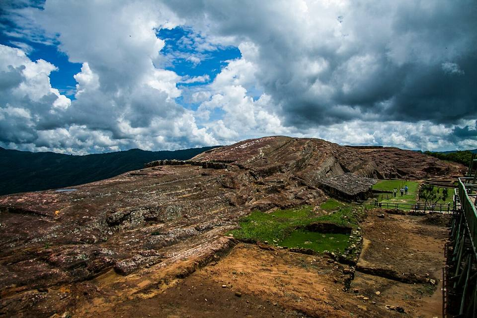
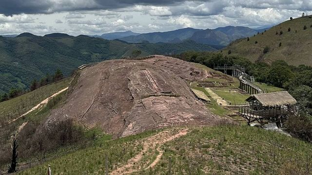
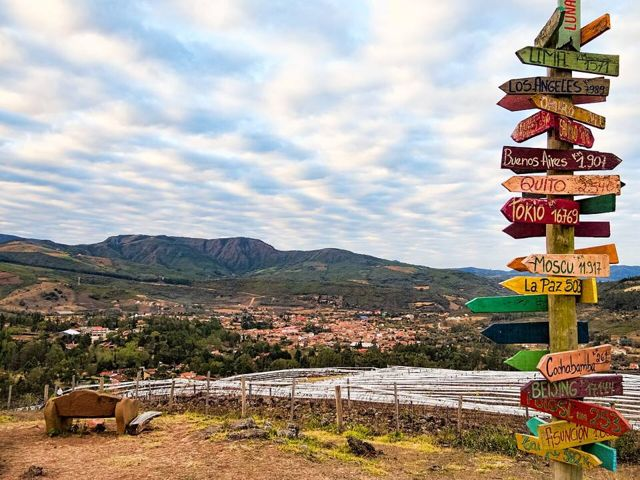
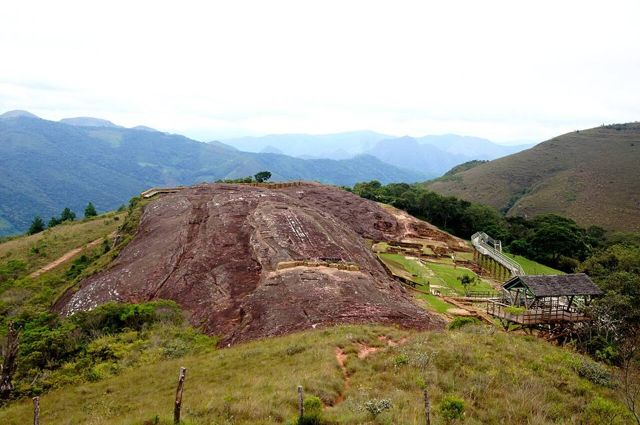
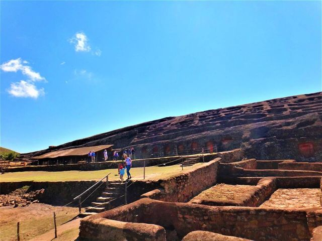
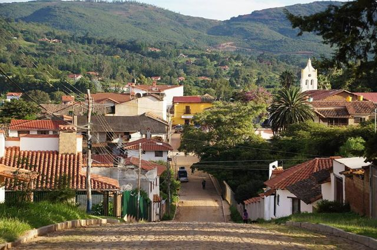
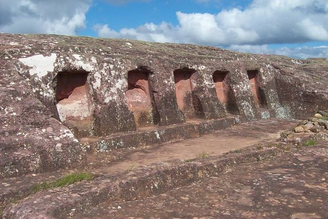

Samaipata
Département de Santa Cruz · Nature et randonnée

Samaipata est un village charmant et tranquille, entre les Andes et la forêt, où beaucoup de voyageurs restent plus longtemps que prévu. On y visite El Fuerte, un énorme rocher sculpté par les peuples préincas, on se promène parmi les fougères géantes d'Amboró et on observe les condors. Bons restaurants, ambiance détendue et climat agréable.
À faire
- El Fuerte de Samaipata : rocher sculpté préinca
- Forêt de fougères géantes d'Amboró
- Cascadas Las Cuevas
- Condors à La Pajcha / Codo de los Andes
À goûter
- Cuisine du monde à SamaipataLe village accueille beaucoup d'étrangers installés : bons restaurants, pain au levain, fromages artisanaux et vins locaux.
- MajaditoRiz cuisiné avec du charque ou du poulet, servi avec un œuf au plat et de la banane frite. Le plat de Santa Cruz et du Beni.
- Vin de TarijaVins d'altitude (jusqu'à 2 000 m) : tannat, malbec, muscat. Dégustation dans les bodegas de la vallée.
À découvrir ici
- UNESCO Fort de Samaipata
Comment aller à Samaipata
Amboró Tour en 4x4 ou excursion · 1 h de 4x4
Excursion guidée depuis Samaipata.
Laguna Volcán Route (bus, voiture) · environ 1 h 30
Route de Samaipata.
Santa Cruz Route (bus, voiture) · 2 h 30 à 3 h
Taxis partagés et trufis depuis Santa Cruz (avenue Grigotá, 4e anneau).
Vallegrande Route (bus, voiture) · 3 h
Bus ou excursion « Route du Che » depuis Samaipata.
Totora Route (bus, voiture) · 5 à 6 h
Bus de l'ancienne route ou voiture.
Cochabamba Route (bus, voiture) · 8 à 10 h
Bus de nuit vers Santa Cruz par l'ancienne route (demander à descendre à Samaipata) ou voiture.
Plus lent que la nouvelle route mais bien plus beau, et passe par Samaipata.
Photos de Samaipata



.jpg){kind=link}








Autres lieux de la région
 Santa Cruz de la SierraLa grande ville tropicale et moderne de l'Orient, aéroport international (Viru Viru).
Santa Cruz de la SierraLa grande ville tropicale et moderne de l'Orient, aéroport international (Viru Viru). CotocaLe sanctuaire de la Vierge de Cotoca et ses potiers, à 20 km de Santa Cruz.
CotocaLe sanctuaire de la Vierge de Cotoca et ses potiers, à 20 km de Santa Cruz. Lomas de ArenaDunes de sable blanc et lagunes au sud de Santa Cruz.
Lomas de ArenaDunes de sable blanc et lagunes au sud de Santa Cruz.- EspejillosPiscines naturelles et cascades sur la rivière, près de Santa Cruz.
 Laguna VolcánUn lac caché au fond d'un cirque de montagnes couvertes de forêt.
Laguna VolcánUn lac caché au fond d'un cirque de montagnes couvertes de forêt. Parc national AmboróForêts de nuages et de fougères arborescentes, très riche en oiseaux.
Parc national AmboróForêts de nuages et de fougères arborescentes, très riche en oiseaux. Buena Vista (Amboró nord)Petit village au pied du parc Amboró, côté forêt tropicale : rivières, oiseaux et café.
Buena Vista (Amboró nord)Petit village au pied du parc Amboró, côté forêt tropicale : rivières, oiseaux et café. VallegrandePetite ville coloniale de montagne, au cœur de la Route du Che.
VallegrandePetite ville coloniale de montagne, au cœur de la Route du Che. La HigueraLe hameau où le Che a été exécuté en 1967, devenu lieu de mémoire.
La HigueraLe hameau où le Che a été exécuté en 1967, devenu lieu de mémoire.